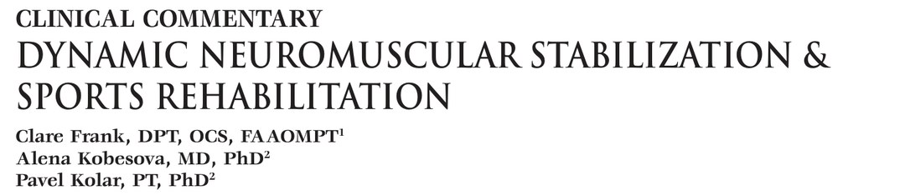
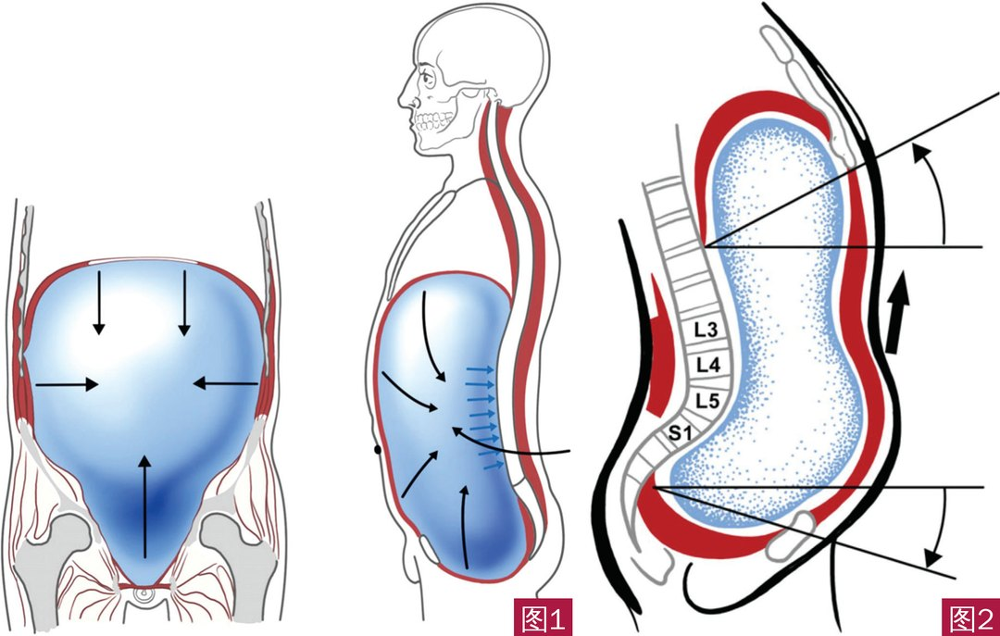
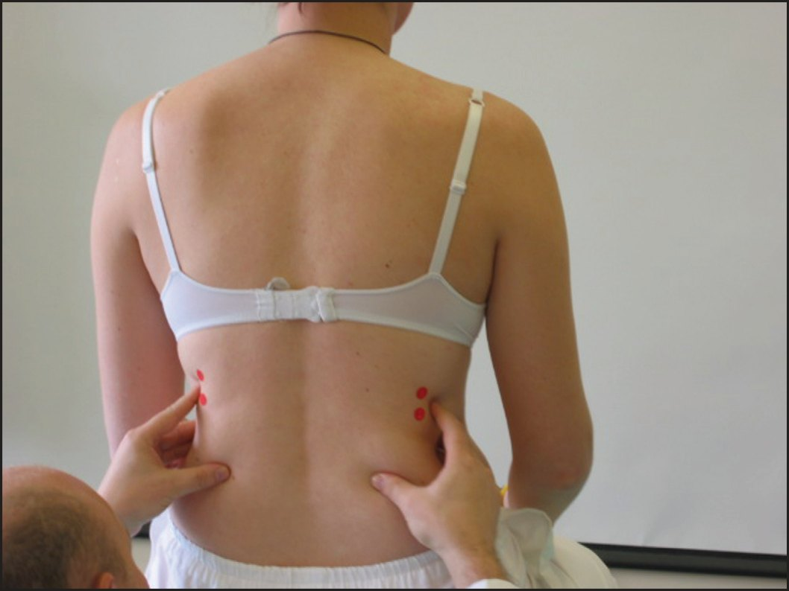
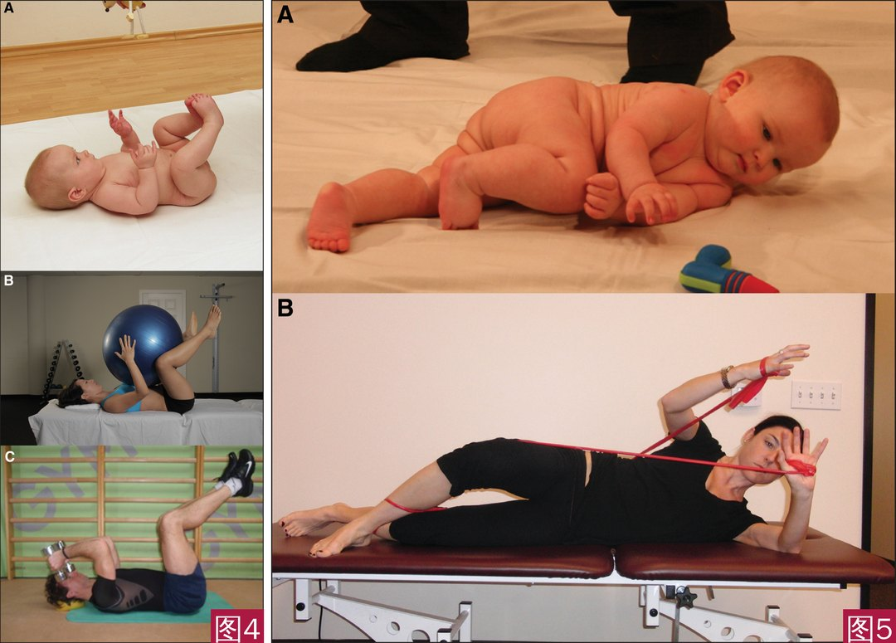
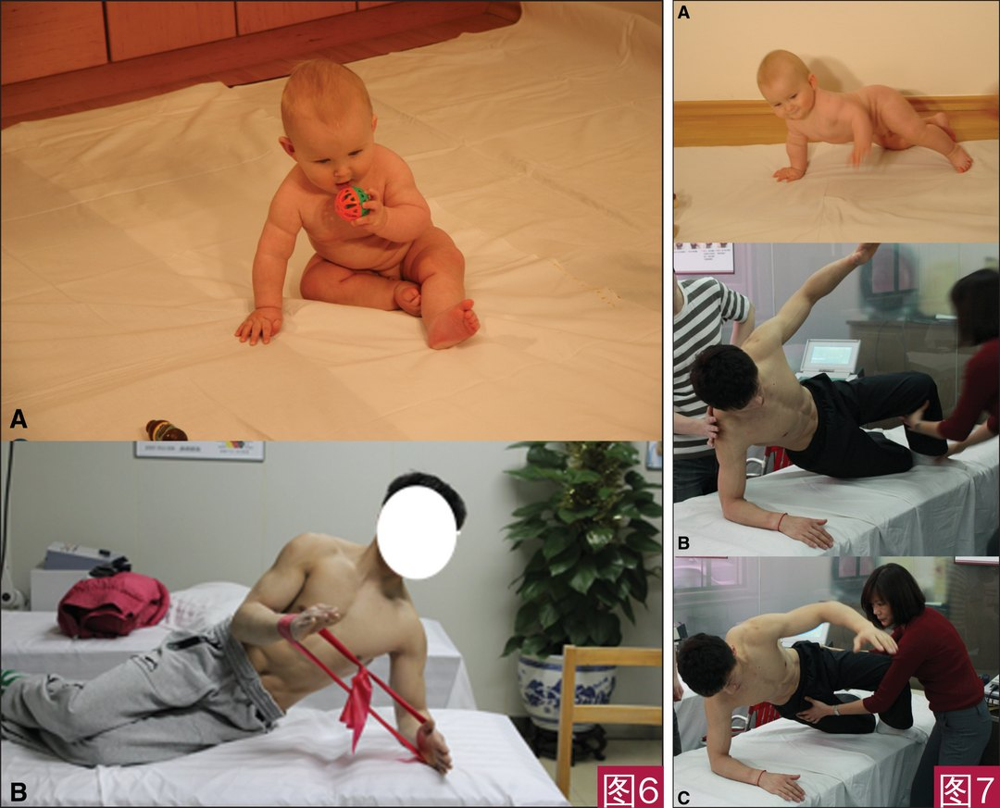
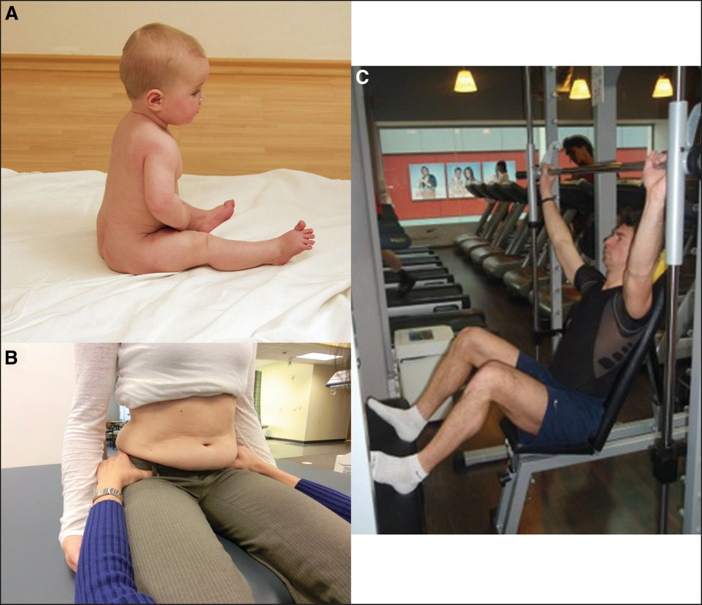
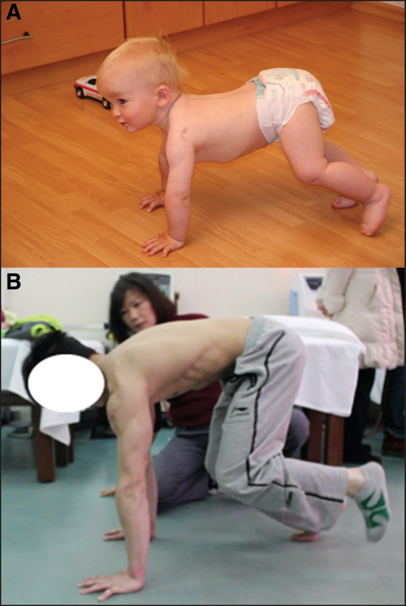
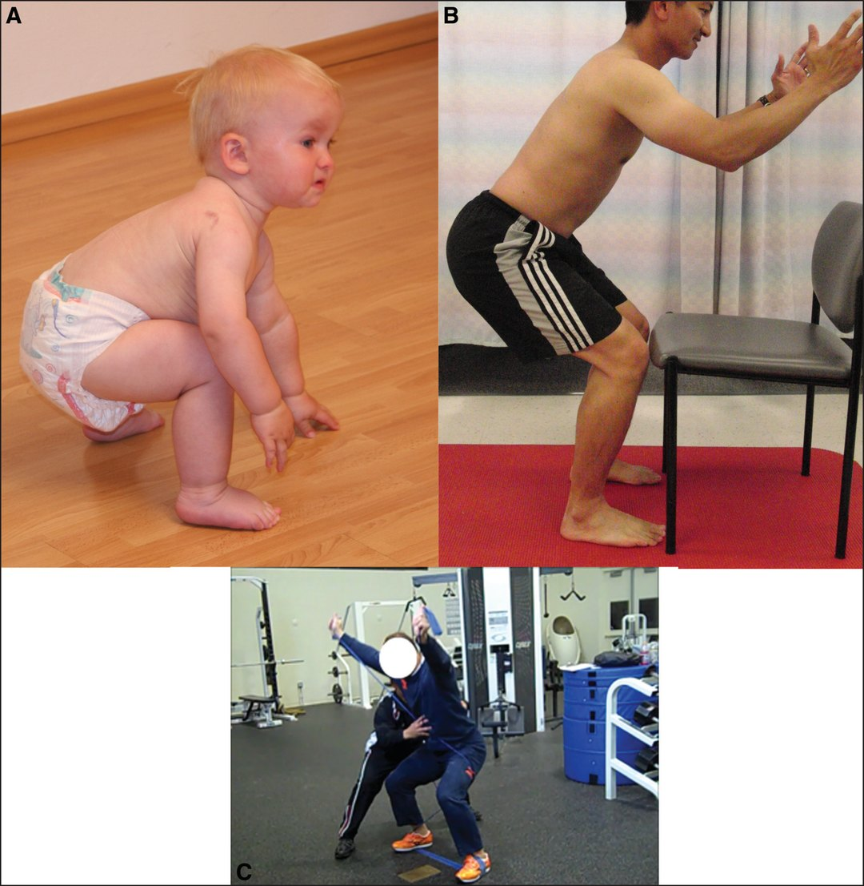

🔖原文首页（IJSPT 2013 年第 8 卷第 1 期）
📚 文献卡片
▪ 英文原题：Dynamic Neuromuscular Stabilization & Sports Rehabilitation（动态神经肌肉稳定与运动康复）
▪ 作者：Clare Frank, DPT, OCS, FAAOMPT · Alena Kobesova, MD, PhD · Pavel Kolar, PT, PhD
▪ 机构：Kaiser Permanente 运动科学 Fellowship（洛杉矶）· 布拉格查理大学 Motol 大学医院
▪ 期刊：International Journal of Sports Physical Therapy（IJSPT）
▪ 年卷期：2013;8(1):62-73
▪ PMCID：PMC3578435
▪ 文章类型：临床评论（Clinical Commentary）
▪ 证据级别：5 级
▪ 关键词：Core stabilization · developmental kinesiology · dynamic neuromuscular stabilization · integrated spinal stabilizing system
"Dynamic neuromuscular (core) stability is necessary for optimal athletic performance and is not achieved purely by adequate strength of abdominals, spinal extensors, gluteals or any other musculature."
"动态神经肌肉（核心）稳定是最佳运动表现的必要条件，但它并不是单靠腹肌、脊柱伸肌、臀肌或其他任何肌肉的力量就能获得的。"
动态神经肌肉稳定（DNS）是一种基于发育运动学（DK）的手法与康复方法，由捷克物理治疗师 Pavel Kolar 创立。他深受“布拉格手法医学学派”的影响，包括 Karel Lewit、Vladimir Janda、Vaclav Vojta 和 Frantisek Vele。
DNS 的核心思路：把运动员的稳定模式，和健康婴儿在发育过程中形成的理想稳定模式进行比较，再把它“训练回去”。
| 概念 | 含义 |
|---|---|
| 发育运动学（DK） | 婴儿的运动模式是先天“预设”的，随中枢神经成熟按固定顺序出现（抬头、抓握、翻身、爬……），无需教 |
| 腹内压（IAP） | 膈肌、盆底、腹横肌共同调节，提供脊柱前方的稳定 |
| 整合脊柱稳定系统（ISSS） | 颈胸段：颈深屈肌与脊柱伸肌协同收缩；下胸腰段：膈肌、盆底、各部分腹肌与脊柱伸肌协同收缩 |
| 固定点（punctum fixum） | ISSS 提供稳定的基础，肌肉才能有效地产生运动 |
| 关节中立（centration） | 关节面最匹配、周围肌肉处于最佳力学位置，力量传递最有效、被动结构负担最小 |
一句话概括：核心稳定靠的是中枢神经对腹内压和深层肌的精确协调，而不是某块肌肉的力量。
• 婴儿的运动模式（肌肉协同）随中枢神经成熟自动出现，顺序可预测
• 中枢成熟与骨骼、肌肉、软组织的结构发育高度同步：大脑成熟影响运动模式，运动模式又影响结构发育
• 一旦中枢神经受损，这种同步被打破，肌肉协调、关节位置、形态发育乃至整个姿势都会改变
普遍认为腹内压升高能稳定脊柱，但它能否“卸载”脊柱仍有争议：有研究发现提重物时腹内压升高可减轻脊柱负荷；也有研究显示 Valsalva 时腹内压升高会同时增加椎间盘内压，提重物时椎旁肌活动也没有减少。Arjman 等认为，腹内压的卸载和稳定作用取决于姿势和任务：向前提物时卸载效果更好，直立时只有在腹肌协同收缩很低时才成立。

🔖图1（左）：膈肌、盆底和腹横肌共同调节腹内压；图2（右）：ISSS 功能不足时，腰椎节段受到向前的剪切应力
这些深层稳定肌构成“深层核心”，在前馈控制下自动、无意识地工作，先于任何有目的的动作激活。有发育性协调障碍的儿童，躯干的预备性姿势调整也存在缺陷，提示训练时要同时考虑近端和远端肌肉的激活时序。
| 月龄 | 发育里程碑 |
|---|---|
| 早期 | 膈肌主要作为呼吸肌 |
| 约 4.5 个月 | 脊柱、骨盆、胸廓的矢状面稳定完全建立，为后续水平面运动（翻身、转身、匍匐、爬）做准备 |
| 约 6 个月 | 腹式呼吸与胸式呼吸协调，膈肌开始兼具呼吸和姿势稳定两种功能 |
Kolar 等发现：四肢抗阻时膈肌姿势性激活异常，可能是慢性腰痛的机制之一，因为脊柱前方受力更大。膈肌姿势功能不足时，常出现浅层脊柱伸肌代偿（脊柱压力增加）和上下胸廓肌肉失衡（胸廓位置异常）。
举例：ISSS 正常时，腰大肌主要屈髋，对脊柱影响很小；ISSS 不足时，腰大肌的牵拉就可能对腰椎产生向前的剪切力。
• 所有稳定肌必须按比例激活；某一环节不足时，其他肌肉会代偿
• 失衡不被纠正，会在中枢固化为次优的运动程序，导致慢性疼痛或表现下降
• Panjabi：脊柱稳定是神经（中枢）、主动（肌肉）、被动（骨与关节）三系统的相互作用
• 作者观点：临床常见的功能障碍，更多与中枢“运动控制障碍”有关，而不是局部关节或肌肉
例子：深蹲做不好，未必是哪块肌肉“紧”或“弱”，可能是大脑层面的 ISSS 模式异常；投手肩袖撞击，不能只松动关节囊、练肩袖，要问“为什么会撞击”——分析上举和投掷动作，找出肩胛动态稳定、下肢活动度/稳定/本体感觉、躯干活动/稳定中的“薄弱环节”。
DNS 有一套功能测试（膈肌测试、仰卧上举、屈颈、俯卧伸颈等），用来评估 ISSS、找出功能障碍的“关键环节”。以坐位膈肌测试为例：

🔖图3：坐位膈肌测试。治疗师触诊下肋廓是否充分侧向扩张、侧腹壁是否激活，以及胸廓是否过度上提、椎旁肌是否过度活跃
| 手指 | 位置 | 监测内容 |
|---|---|---|
| 拇指 | 胸腰段椎旁肌 | 收缩强度 |
| 示指、中指 | 下肋 | 呼吸时胸廓的运动 |
| 环指、小指 | 侧腹壁 | 腹壁对腹内压变化的抵抗（离心收缩） |
正常：吸气时胸腹前后向扩张、下肋廓侧向扩张、胸廓几乎不上提；呼气时胸廓回到静息位。
常见错误模式：
• 胸廓向头侧上提或耸肩（辅助呼吸肌代偿膈肌不足）
• 椎旁肌过度收缩
• 下肋廓侧向扩张不足，或腹壁对腹内压变化的抵抗不足
• 不能保持脊柱直立（滑向屈曲或伸展）
让运动员轻轻收紧腹部时，这些错误常会放大；若为单侧，往往在功能障碍的一侧。
临床应用：右肩撞击试验阳性、上举有疼痛弧的运动员，膈肌测试发现右侧下肋扩张不足、右肩带上提过多或右侧腹壁激活不足。提示他增加右侧腹部激活后再测撞击试验——如果症状改善或消失，就应把治疗重点放在 ISSS，而不只是肩关节。
"Every developmental position is an exercise position."
"每一个发育姿势，都是一个训练姿势。"
三条基本原则：
• ① 恢复正确的呼吸模式和腹内压调节
• ② 为四肢的动态运动建立良好的支撑
• ③ 运动全程保证所有关节处于中立（centration）
阻力或负荷要与运动员保持正确姿势的能力相匹配；最终目标是“训练大脑”，通过反复练习让理想模式变成自动化的日常动作和运动技能。
| 发育月龄 | 姿势 | 对应训练 |
|---|---|---|
| 4.5 个月 | 仰卧屈髋屈膝 90° | 仰卧 90/90 位训练 ISSS 和腹内压；可抱球左右翻滚激活斜向肌链；逐渐加负荷 |
| 5～6 个月 | 翻身 | 侧卧弹力带训练，对应翻身模式 |
| 7.5 个月 | 斜坐 | 改良斜坐/侧桥：一侧肩做稳定支撑，另一侧肩做肩袖强化 |
| 斜坐 → 四点跪 | 过渡姿势 | 支撑侧肩：关节盂在固定的肱骨上转动；伸手侧肩：肱骨在固定的关节盂上转动 |
| 8～9 个月 | 坐位 | 坐位呼吸和腹内压训练（触觉反馈），再用于健身房负重训练 |
| 14 个月 | 熊爬 | 四点 → 三点支撑（抬一只脚）→ 两点支撑（对侧手脚抬起）向前爬 |
| 16 个月 | 深蹲 | 训练良好的深蹲模式，避免膝前移的“股四头肌主导”；弹力带深蹲加伸手 |

🔖图4（左）：A 4.5 个月婴儿建立理想的 ISSS 和腹内压调节；B 仰卧屈髋屈膝 90° 训练，可抱球左右翻滚激活斜向肌链；C 增加负荷时保持良好呼吸和腹内压
图5（右）：A 5～6 个月婴儿的翻身模式；B 对应翻身模式的弹力带训练

🔖图6（左）：A 7.5 个月的斜坐姿势；B 改良斜坐/侧桥位，左肩稳定、右肩做肩袖强化，同时保持腹内压
图7（右）：A 斜坐向四点跪过渡；B 斜坐位训练右肩稳定与上方手臂伸够；C 从斜坐过渡到四点跪，右肩关节盂在固定的肱骨上转动，左臂肱骨在固定的关节盂上转动

🔖图8：A 8～9 个月婴儿 ISSS 和腹内压平衡良好的坐姿；B 坐位在触觉反馈下训练正确呼吸和腹内压；C 健身房负重训练时运用正确的呼吸和腹内压

🔖图9：A 14 个月的熊爬姿势；B 运动员在熊爬位从四点支撑到三点支撑（抬左脚），可进阶到对侧手脚同时抬起向前爬

🔖图10：A 16 个月的深蹲姿势；B 训练良好的深蹲模式，避免膝超过脚尖的“股四头肌主导”；C 弹力带深蹲加伸手，重点是腹内压调节和 ISSS 协调
• 证据级别低：5 级临床评论，以理论阐述和临床经验为主，没有提供 DNS 疗效的对照研究数据
• 评估主观：作者也承认神经肌肉功能缺乏客观测量，膈肌测试等依赖治疗师的观察和触诊
• 理论假设较强：“大部分功能障碍源于中枢运动控制”是作者观点，尚缺乏直接证据
• 利益相关：作者 Kolar 是 DNS 的创立者，Frank 是 DNS 的讲师
• 优点：把发育运动学、腹内压和区域相互依赖整合成一套可操作的评估与训练框架，配图直观
① 理念：核心稳定来自中枢对腹内压和深层肌的协调，不是单块肌肉的力量
② ISSS：膈肌、盆底、腹肌、脊柱伸肌、颈深屈肌协同工作，提供“固定点”
③ 膈肌：约 6 个月起兼具呼吸和姿势稳定双重功能
④ 评估：坐位膈肌测试找“关键环节”，纠正后症状改善即提示问题在 ISSS
⑤ 训练：每个发育姿势都是训练姿势，先呼吸和腹内压，再支撑，再关节中立
⑥ 进阶：仰卧 90/90 → 翻身 → 斜坐 → 坐 → 熊爬 → 深蹲，最后融入专项
欢迎关注悦美力公众号，获取更多物理治疗的专业知识！
📄参考文献：
Frank C, Kobesova A, Kolar P. Dynamic Neuromuscular Stabilization & Sports Rehabilitation. Int J Sports Phys Ther. 2013;8(1):62-73. PMCID: PMC3578435.
文中图片均来自原文（图中仅有 A/B/C 及椎体编号），仅用于学术交流。